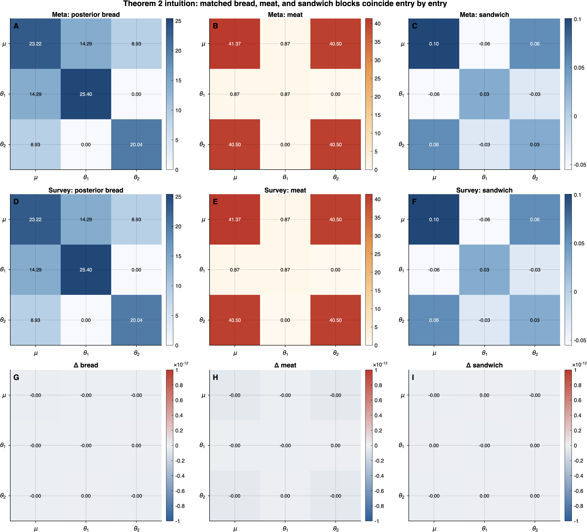

5 Theorem 2: Sandwich Equivalence
Theorem 1 established that the two likelihoods differ by a \(\boldsymbol{\phi}\)-free constant. This chapter draws the immediate but operationally critical consequence for the sandwich variance estimator: the survey HC sandwich and the meta-analytic CR sandwich are numerically identical under the exactness conditions.
The argument is direct: the sandwich is assembled from scores and Hessians, and Theorem 1 guarantees that both are identical across frameworks. We begin by defining the sandwich variance estimator (Definition 3), state and prove the equivalence (Theorem 2), then develop the Bayesian marginal sandwich (Definition 3a) — a new construction that resolves the conditional-vs-marginal gap for fixed-effect inference — and establish the full sandwich variant taxonomy (Definition 3b).
5.1 Sandwich Variance Estimator
Before stating Theorem 2, we define the sandwich variance estimator formally.
Given a working (pseudo-)log-likelihood \(\ell(\boldsymbol{\phi}) = \sum_{j=1}^{J} \ell_j(\boldsymbol{\phi})\) evaluated at a point estimate \(\hat{\boldsymbol{\phi}}\) (posterior mode or MLE), the sandwich variance estimator is the \(d \times d\) matrix \[ \mathbf{V}_{\mathrm{sand}} \;=\; \mathbf{H}^{-1}\,\mathbf{M}\,\mathbf{H}^{-1}, \tag{5.1}\] where:
Bread: \(\mathbf{H} = -\nabla^2_{\boldsymbol{\phi}} \ell(\boldsymbol{\phi})\big|_{\hat{\boldsymbol{\phi}}}\) is the negative Hessian of the log-likelihood evaluated at \(\hat{\boldsymbol{\phi}}\). This is the observed information matrix.
Meat: \(\mathbf{M} = \sum_{j=1}^{J} \mathbf{s}_j(\hat{\boldsymbol{\phi}})\,\mathbf{s}_j(\hat{\boldsymbol{\phi}})^{\intercal}\) is the sum of cluster-level score outer products evaluated at \(\hat{\boldsymbol{\phi}}\).
Cluster-level score: \(\mathbf{s}_j(\boldsymbol{\phi}) = \nabla_{\boldsymbol{\phi}} \ell_j(\boldsymbol{\phi}) \in \mathbb{R}^d\) is the gradient of the cluster-\(j\) log-likelihood contribution with respect to the full parameter vector \(\boldsymbol{\phi}\).
When the working model is correctly specified, the expected meat equals the expected bread (\(\mathbf{M} \to \mathbf{H}\) in probability as \(J \to \infty\) under standard regularity), and the sandwich reduces to the model-based variance \(\mathbf{H}^{-1}\). When the working model is misspecified — as is generically the case for the CE assumption of compound symmetry — the discrepancy between \(\mathbf{M}\) and \(\mathbf{H}\) captures the excess variability due to unmodeled dependence or heterogeneity, and the sandwich provides a consistent variance estimate regardless of working-model correctness. This is the fundamental motivation for sandwich-based inference in both the survey and meta-analytic literatures.
For Theorem 2, the critical structural requirement is that the additive constant \(c\) from Theorem 1 decomposes as \(c = \sum_j c_j\) into cluster-level constants that are individually \(\boldsymbol{\phi}\)-free. This is stronger than the global statement \(c \not\equiv c(\boldsymbol{\phi})\): it ensures that each cluster-level score \(\mathbf{s}_j = \nabla_{\boldsymbol{\phi}} \ell_j\) is separately identical across frameworks, not merely that the total score \(\sum_j \mathbf{s}_j\) matches. The distinction matters because the meat matrix \(\mathbf{M} = \sum_j \mathbf{s}_j \mathbf{s}_j^{\intercal}\) depends on the individual score vectors, not only their sum.
5.2 Statement
Under conditions (E1)–(E3) and (E5), let \(\hat{\boldsymbol{\phi}}\) be a common evaluation point (posterior mode or MLE). Then:
Bread equivalence: \(\mathbf{H}_{\mathrm{surv}} = \mathbf{H}_{\mathrm{meta}}\).
Score equivalence: \(\mathbf{s}_j^{\mathrm{surv}}(\hat{\boldsymbol{\phi}}) = \mathbf{s}_j^{\mathrm{meta}}(\hat{\boldsymbol{\phi}})\) for every \(j = 1, \ldots, J\).
Meat equivalence: \(\mathbf{M}_{\mathrm{surv}} = \mathbf{M}_{\mathrm{meta}}\).
Sandwich equivalence: \(\mathbf{V}_{\mathrm{sand}}^{\mathrm{surv}} = \mathbf{H}_{\mathrm{surv}}^{-1}\,\mathbf{M}_{\mathrm{surv}}\,\mathbf{H}_{\mathrm{surv}}^{-1} = \mathbf{H}_{\mathrm{meta}}^{-1}\,\mathbf{M}_{\mathrm{meta}}\,\mathbf{H}_{\mathrm{meta}}^{-1} = \mathbf{V}_{\mathrm{sand}}^{\mathrm{meta}}\).
In particular, the survey HC\(a\) sandwich variance estimator and the meta-analytic CR\(a\) robust variance estimator are numerically identical for \(a = 0, 1, 2, 3\).
The following figure illustrates Theorem 2 using the same toy matched example from Figure 4.1. Figure 5.1 displays the posterior bread, the meat, and the resulting sandwich variance side by side for the meta-analytic and survey frameworks. The difference row vanishes numerically, making the equality of every matrix building block visually explicit.

5.3 Full Proof
The proof proceeds in four steps, establishing parts (b), (c), (a), and (d) in that order. We present score equivalence first because it is the logical foundation: meat equivalence follows from score equivalence, and bread equivalence follows from Hessian equivalence (Theorem 1(b)). The sandwich is then assembled from its three ingredients.
5.3.1 Part (b): Score Equivalence
By Theorem 1, the global log-likelihoods satisfy \(\ell^{(w)}_{\mathrm{surv}}(\boldsymbol{\phi}) = \ell_{\mathrm{meta}}(\boldsymbol{\phi}) + c\), where \(c\) does not depend on \(\boldsymbol{\phi}\). The crucial structural property, established in Section 4.3.3, is that \(c\) decomposes additively over clusters: \[ c = \sum_{j=1}^{J} c_j, \] where each \(c_j = -\frac{n_j}{2}\log(\sigma^2_{e,j}/\bar{s}_j^2)\) depends on \(\sigma^2_{e,j}\), \(\bar{s}_j^2\), \(\rho\), and \(n_j\) but not on \(\boldsymbol{\phi}\).
It follows that the cluster-level log-likelihoods also differ by a \(\boldsymbol{\phi}\)-free constant: \[ \ell_j^{(w)}(\boldsymbol{\phi}) = \ell_j^{\mathrm{meta}}(\boldsymbol{\phi}) + c_j, \quad j = 1, \ldots, J. \]
Taking the gradient with respect to \(\boldsymbol{\phi}\): \[ \mathbf{s}_j^{\mathrm{surv}}(\boldsymbol{\phi}) = \nabla_{\boldsymbol{\phi}}\,\ell_j^{(w)}(\boldsymbol{\phi}) = \nabla_{\boldsymbol{\phi}}\,\ell_j^{\mathrm{meta}}(\boldsymbol{\phi}) + \underbrace{\nabla_{\boldsymbol{\phi}}\, c_j}_{= \,\mathbf{0}} = \mathbf{s}_j^{\mathrm{meta}}(\boldsymbol{\phi}). \tag{5.2}\]
Since \(c_j\) does not depend on \(\boldsymbol{\phi}\), its gradient vanishes. Equation Equation 5.2 holds at every \(\boldsymbol{\phi} \in \mathbb{R}^d\), and in particular at \(\hat{\boldsymbol{\phi}}\): \[ \mathbf{s}_j^{\mathrm{surv}}(\hat{\boldsymbol{\phi}}) = \mathbf{s}_j^{\mathrm{meta}}(\hat{\boldsymbol{\phi}}), \quad j = 1, \ldots, J. \quad\square \]
5.3.2 Part (c): Meat Equivalence
The meat matrix is defined as the sum of cluster-level score outer products. By part (b), the cluster-level scores are identical: \[ \begin{aligned} \mathbf{M}_{\mathrm{surv}} &= \sum_{j=1}^{J} \mathbf{s}_j^{\mathrm{surv}}(\hat{\boldsymbol{\phi}})\,\bigl[\mathbf{s}_j^{\mathrm{surv}}(\hat{\boldsymbol{\phi}})\bigr]^{\intercal} \\ &= \sum_{j=1}^{J} \mathbf{s}_j^{\mathrm{meta}}(\hat{\boldsymbol{\phi}})\,\bigl[\mathbf{s}_j^{\mathrm{meta}}(\hat{\boldsymbol{\phi}})\bigr]^{\intercal} \\ &= \mathbf{M}_{\mathrm{meta}}. \end{aligned} \tag{5.3}\]
Each term in the sum is a \(d \times d\) rank-one matrix \(\mathbf{s}_j \mathbf{s}_j^{\intercal}\), and the substitution is term by term. \(\square\)
5.3.3 Part (a): Bread Equivalence
By Theorem 1(b), the Hessian matrices are identical at every \(\boldsymbol{\phi}\): \[ \nabla^2_{\boldsymbol{\phi}}\,\ell^{(w)}_{\mathrm{surv}}(\boldsymbol{\phi}) = \nabla^2_{\boldsymbol{\phi}}\,\ell_{\mathrm{meta}}(\boldsymbol{\phi}). \]
Taking negatives and evaluating at \(\hat{\boldsymbol{\phi}}\): \[ \mathbf{H}_{\mathrm{surv}} = -\nabla^2_{\boldsymbol{\phi}}\,\ell^{(w)}_{\mathrm{surv}}\big|_{\hat{\boldsymbol{\phi}}} = -\nabla^2_{\boldsymbol{\phi}}\,\ell_{\mathrm{meta}}\big|_{\hat{\boldsymbol{\phi}}} = \mathbf{H}_{\mathrm{meta}}. \tag{5.4}\]
\(\square\)
5.3.4 Part (d): Sandwich Equivalence
Substituting parts (a) and (c) into Definition 3 (Equation 5.1): \[ \begin{aligned} \mathbf{V}_{\mathrm{sand}}^{\mathrm{surv}} &= \mathbf{H}_{\mathrm{surv}}^{-1}\,\mathbf{M}_{\mathrm{surv}}\,\mathbf{H}_{\mathrm{surv}}^{-1} \\ &= \mathbf{H}_{\mathrm{meta}}^{-1}\,\mathbf{M}_{\mathrm{meta}}\,\mathbf{H}_{\mathrm{meta}}^{-1} \\ &= \mathbf{V}_{\mathrm{sand}}^{\mathrm{meta}}. \end{aligned} \tag{5.5}\]
\(\quad\blacksquare\)
Theorem 2 extends the equivalence chain from likelihoods to variance estimators. The survey HC sandwich and the meta-analytic CR sandwich — developed by separate literatures for separate purposes — are the same matrix when evaluated under the exactness conditions. The practical consequence is immediate: any sandwich-based diagnostic or correction available in one tradition applies equally in the other. The Remarks that follow explore the posterior Hessian, the Bayesian marginal sandwich for fixed effects, the sandwich variant taxonomy, and the novel structural identification HC\(_a\) = CR\(_a\).
5.4 Remarks
5.4.1 Remark 4 (Posterior Hessian and the Bayesian Sandwich)
In the Bayesian setting, the sandwich variance estimator is typically computed using the posterior Hessian rather than the likelihood-only Hessian. The posterior Hessian includes the curvature contribution from the prior: \[ \mathbf{H}^{\mathrm{post}} = \mathbf{H} + \mathbf{H}_{\mathrm{prior}}, \tag{5.6}\] where \(\mathbf{H}_{\mathrm{prior}} = -\nabla^2_{\boldsymbol{\phi}} \log p(\boldsymbol{\phi})\big|_{\hat{\boldsymbol{\phi}}}\) collects the prior precision contributions. For the hierarchical normal model: \[ \mathbf{H}_{\mathrm{prior}} = \mathrm{diag}\!\left(\mathbf{H}_{\mathrm{prior}}^{\boldsymbol{\beta}},\; \sigma_\theta^{-2}\mathbf{I}_J\right), \] where \(\mathbf{H}_{\mathrm{prior}}^{\boldsymbol{\beta}}\) is the prior precision for \(\boldsymbol{\beta}\) and \(\sigma_\theta^{-2}\mathbf{I}_J\) comes from the \(\textsf{N}(0, \sigma^2_\theta)\) prior on the random effects.
Since both frameworks use the same prior on \((\boldsymbol{\beta}, \sigma^2_\theta)\) and the same random-effects distribution, the prior Hessians are identical: \[ \mathbf{H}_{\mathrm{prior}}^{\mathrm{surv}} = \mathbf{H}_{\mathrm{prior}}^{\mathrm{meta}}. \]
Combined with Theorem 2(a), the posterior bread is also identical: \[ \mathbf{H}^{\mathrm{post}}_{\mathrm{surv}} = \mathbf{H}_{\mathrm{surv}} + \mathbf{H}_{\mathrm{prior}}^{\mathrm{surv}} = \mathbf{H}_{\mathrm{meta}} + \mathbf{H}_{\mathrm{prior}}^{\mathrm{meta}} = \mathbf{H}^{\mathrm{post}}_{\mathrm{meta}}. \]
Critical clarification on the meat. While the bread may use either the likelihood-only Hessian \(\mathbf{H}\) or the posterior Hessian \(\mathbf{H}^{\mathrm{post}}\) (both are equivalent across frameworks), the meat \(\mathbf{M}\) must always use likelihood-only scores. That is, \[ \mathbf{M} = \sum_{j=1}^{J} \mathbf{s}_j(\hat{\boldsymbol{\phi}})\,\mathbf{s}_j(\hat{\boldsymbol{\phi}})^{\intercal}, \quad \text{where} \quad \mathbf{s}_j(\boldsymbol{\phi}) = \nabla_{\boldsymbol{\phi}}\,\ell_j(\boldsymbol{\phi}), \] and \(\ell_j\) is the cluster-\(j\) likelihood contribution, not the posterior contribution. The reason is conceptual: the meat estimates the variance of the score under the true data-generating process. The prior is not part of the data-generating process; it is a modeling choice. Including prior score contributions in the meat would conflate model uncertainty (captured by the prior) with sampling uncertainty (captured by the meat), producing an inconsistent variance estimate.
In implementation, this means:
- Bread options: \((\mathbf{H}^{\mathrm{post}})^{-1} \mathbf{M}\, (\mathbf{H}^{\mathrm{post}})^{-1}\) (posterior Hessian bread) or \(\mathbf{H}^{-1} \mathbf{M}\, \mathbf{H}^{-1}\) (likelihood-only bread). Both are valid; the posterior Hessian version is standard in the Bayesian sandwich correction literature (Williams and Savitsky 2021).
- Meat: Always \(\mathbf{M} = \sum_j \mathbf{s}_j \mathbf{s}_j^{\intercal}\) with \(\mathbf{s}_j = \nabla_{\boldsymbol{\phi}} \ell_j\) (likelihood-only). Never \(\nabla_{\boldsymbol{\phi}}[\ell_j + \log p]\).
This distinction requires explicit clarification. The sandwich equivalence of Theorem 2 holds regardless of whether the bread uses \(\mathbf{H}\) or \(\mathbf{H}^{\mathrm{post}}\), because both are identical across frameworks. The meat is identical because Theorem 1’s additive constant \(c\) decomposes into cluster-level constants \(c_j\) that do not depend on \(\boldsymbol{\phi}\).
Conditional nature of the full-joint sandwich. An important operational consequence of the likelihood-only meat is that the full-joint sandwich \(\mathbf{V}_{\mathrm{sand}} = (\mathbf{H}^{\mathrm{post}})^{-1}\mathbf{M}(\mathbf{H}^{\mathrm{post}})^{-1}\) produces conditional variance estimates for the fixed effects \(\boldsymbol{\beta}\). Specifically, the scores \(\mathbf{s}_j(\hat{\boldsymbol{\phi}})\) are evaluated at the posterior mean \(\hat{\boldsymbol{\phi}} = (\hat{\boldsymbol{\beta}}^{\intercal}, \hat{\boldsymbol{\theta}}^{\intercal})^{\intercal}\) of the full joint model, where each \(\hat{\theta}_j\) absorbs the study-level variation. Consequently, the study-level residuals \(\bar{r}_j = \bar{y}_j - \mathbf{\bar{x}}_j^{\intercal}\hat{\boldsymbol{\beta}} - \hat{\theta}_j\) are approximately zero at the posterior mean, making the \(\boldsymbol{\beta}\)-block of the meat near-zero: \[ [\mathbf{M}]_{\boldsymbol{\beta}\boldsymbol{\beta}} = \sum_{j=1}^{J} \mathbf{s}_j^{\boldsymbol{\beta}}\,(\mathbf{s}_j^{\boldsymbol{\beta}})^{\intercal} \approx \mathbf{0}, \] and therefore \([\mathbf{V}_{\mathrm{sand}}]_{\boldsymbol{\beta}\boldsymbol{\beta}}\) is much smaller than the marginal (cluster-robust) sandwich SE\(^2_{\mathrm{CR2}}(\boldsymbol{\beta})\).
This is expected behavior, not a computational error. The full-joint sandwich captures the variance of \(\hat{\boldsymbol{\beta}}\) conditional on the realized \(\hat{\boldsymbol{\theta}}\), while a marginal sandwich estimates \(\mathrm{Var}(\hat{\boldsymbol{\beta}})\) marginalizing over \(\boldsymbol{\theta}\). For the blockwise CCC of \(\boldsymbol{\beta}\), the marginal sandwich is the appropriate target because inference on \(\boldsymbol{\beta}\) integrates over the random-effects distribution. This motivates the Bayesian marginal sandwich developed in Remark 4b below and the blockwise approach described in Section 6.2.2.
Empirically, using the TSL15 data: the full-joint analytical sandwich gives \(\mathrm{SD}_{\mathrm{sand}}(\mu) \approx 0.007\), while the marginal CR2 gives \(\mathrm{SE}_{\mathrm{CR2}}(\mu) \approx 0.021\) — a factor of 3, reflecting exactly the conditional-vs-marginal gap predicted by the theory.
5.4.2 Definition 3a (Bayesian Marginal Sandwich)
The conditional-vs-marginal gap described above can be resolved within a purely Bayesian framework by analytically integrating out the study-specific random effects \(\theta_j\) before constructing the sandwich. The closed-form derivation below is exact when the linear predictor is cluster-constant within each study (intercept-only or study-level covariates, i.e., the setting of condition (E4)). In that case the sandwich operates on the \((K+1)\)-dimensional parameter vector \((\boldsymbol{\beta}, \tau^2)\) rather than the full \((K+J)\)-dimensional vector \((\boldsymbol{\beta}, \boldsymbol{\theta})\). We develop this special-case construction in three steps: (i) deriving the marginal likelihood, (ii) computing the marginal scores and Hessian, and (iii) assembling the sandwich.
Step 1: Marginal likelihood derivation
Under the CE meta-analytic model, and assuming the linear predictor is cluster-constant within study (\(\mathbf{x}_{ij}=\mathbf{x}_j\) for all \(i\)), the joint likelihood for study \(j\) is \[ p(\mathbf{y}_j \mid \boldsymbol{\beta}, \theta_j) = \prod_{i=1}^{n_j} \textsf{N}\!\left(y_{ij} \mid \mathbf{x}_{ij}^{\intercal}\boldsymbol{\beta} + \theta_j,\; \bar{s}_j^2\right), \tag{5.7}\] where \(\bar{s}_j^2\) is the (known) within-study sampling variance under the (E2) specification. Under the cluster-constant linear predictor assumption, the study-level sufficient statistic for \((\boldsymbol{\beta}, \theta_j)\) is \(\bar{y}_j = n_j^{-1}\sum_{i=1}^{n_j} y_{ij}\), with conditional distribution: \[ \bar{y}_j \mid \boldsymbol{\beta}, \theta_j \;\sim\; \textsf{N}\!\left(\mathbf{\bar{x}}_j^{\intercal}\boldsymbol{\beta} + \theta_j,\; \frac{\bar{s}_j^2}{n_j}\right). \tag{5.8}\]
To obtain the marginal likelihood, we integrate over the random-effects distribution \(\theta_j \sim \textsf{N}(0, \tau^2)\): \[ p(\bar{y}_j \mid \boldsymbol{\beta}, \tau^2) = \int_{-\infty}^{\infty} \textsf{N}\!\left(\bar{y}_j \mid \mathbf{\bar{x}}_j^{\intercal}\boldsymbol{\beta} + \theta_j,\; \frac{\bar{s}_j^2}{n_j}\right) \cdot \textsf{N}(\theta_j \mid 0, \tau^2)\; d\theta_j. \tag{5.9}\]
This is a convolution of two Gaussian densities. Using the identity \(\textsf{N}(z \mid a, \sigma_1^2) \cdot \textsf{N}(a \mid b, \sigma_2^2) \propto \textsf{N}(z \mid b, \sigma_1^2 + \sigma_2^2) \cdot \textsf{N}(a \mid m, v)\) (where \(m\) and \(v\) are functions of \(z, b, \sigma_1^2, \sigma_2^2\)), the integral evaluates to: \[ p(\bar{y}_j \mid \boldsymbol{\beta}, \tau^2) = \textsf{N}\!\left(\bar{y}_j \;\Big|\; \mathbf{\bar{x}}_j^{\intercal}\boldsymbol{\beta},\; \underbrace{\frac{\bar{s}_j^2}{n_j} + \tau^2}_{=\; v_j}\right). \tag{5.10}\]
Defining \(v_j = \bar{s}_j^2/n_j + \tau^2\) and the study-level residual \(r_j = \bar{y}_j - \mathbf{\bar{x}}_j^{\intercal}\boldsymbol{\beta}\), the marginal log-likelihood for study \(j\) is: \[ \ell_j^{\mathrm{marg}}(\boldsymbol{\beta}, \tau^2) = -\frac{1}{2}\log(2\pi) - \frac{1}{2}\log v_j - \frac{r_j^2}{2v_j}. \tag{5.11}\]
The total marginal log-likelihood is \(\ell^{\mathrm{marg}}(\boldsymbol{\beta}, \tau^2) = \sum_{j=1}^{J} \ell_j^{\mathrm{marg}}(\boldsymbol{\beta}, \tau^2)\).
Marginal CE model (closed-form special case). Under the CE meta-analytic model with the independence working model (\(\rho_{\mathrm{work}} = 0\)) and a cluster-constant linear predictor within study, integrating \(\theta_j \sim \textsf{N}(0, \tau^2)\) out of the joint likelihood yields the marginal model: \[ \bar{y}_j \mid \boldsymbol{\beta}, \tau^2 \;\sim\; \textsf{N}\!\left(\mathbf{\bar{x}}_j^{\intercal}\boldsymbol{\beta},\; v_j\right), \quad v_j = \frac{\bar{s}_j^2}{n_j} + \tau^2, \tag{5.12}\] where \(\bar{y}_j = n_j^{-1}\sum_{i} y_{ij}\) and \(\mathbf{\bar{x}}_j = n_j^{-1}\sum_{i} \mathbf{x}_{ij}\) are the study-level sufficient statistics.
Scope limitation. ⚠️ The cluster-mean reduction above is exact only when the linear predictor is constant within study (intercept-only or study-level covariates) and \(\rho_{\mathrm{work}}=0\). For general within-study-varying covariates, the exact marginal model is the full vector model \[ \mathbf{y}_j \mid \boldsymbol{\beta}, \tau^2 \sim \textsf{N}\!\left(\mathbf{X}_j\boldsymbol{\beta},\; \bar{s}_j^2\mathbf{I}_{n_j} + \tau^2\mathbf{1}_{n_j}\mathbf{1}_{n_j}^{\intercal}\right), \] and the marginal sandwich must be written in full matrix form. The present closed-form formulas therefore apply to the intercept-only and study-level-covariate case; the abstract marginal equivalence proposition proved later in this chapter is more general.
Step 2: Marginal scores and Hessian
Marginal scores. Differentiating Equation 5.11 with respect to \(\boldsymbol{\beta}\) and \(\tau^2\):
\(\boldsymbol{\beta}\)-score: \[ \frac{\partial \ell_j^{\mathrm{marg}}}{\partial \boldsymbol{\beta}} = \frac{r_j}{v_j}\,\mathbf{\bar{x}}_j, \tag{5.13}\] since \(\partial r_j / \partial \boldsymbol{\beta} = -\mathbf{\bar{x}}_j\) and \(\partial(-r_j^2/2v_j)/\partial \boldsymbol{\beta} = r_j\,\mathbf{\bar{x}}_j / v_j\).
\(\tau^2\)-score: Using \(\partial v_j/\partial \tau^2 = 1\): \[ \frac{\partial \ell_j^{\mathrm{marg}}}{\partial \tau^2} = -\frac{1}{2v_j} + \frac{r_j^2}{2v_j^2}. \tag{5.14}\]
Combining into the \((K+1)\)-vector \(\mathbf{s}_j(\boldsymbol{\xi}) = (\mathbf{s}_j(\boldsymbol{\beta})^{\intercal}, s_j(\tau^2))^{\intercal}\) with \(\boldsymbol{\xi} = (\boldsymbol{\beta}^{\intercal}, \tau^2)^{\intercal}\): \[ s_j(\boldsymbol{\beta}) = \frac{r_j \,\mathbf{\bar{x}}_j}{v_j}, \qquad s_j(\tau^2) = -\frac{1}{2v_j} + \frac{r_j^2}{2v_j^2}. \tag{5.15}\]
Marginal Hessian. The second derivatives of \(\ell^{\mathrm{marg}}(\boldsymbol{\xi}) = \sum_j \ell_j^{\mathrm{marg}}(\boldsymbol{\xi})\) are:
\(\boldsymbol{\beta}\boldsymbol{\beta}\)-block: \[ -\frac{\partial^2 \ell^{\mathrm{marg}}}{\partial \boldsymbol{\beta}\,\partial \boldsymbol{\beta}^{\intercal}} = \sum_{j=1}^{J} \frac{\mathbf{\bar{x}}_j\,\mathbf{\bar{x}}_j^{\intercal}}{v_j}, \tag{5.16}\] which is the weighted normal equations matrix with weights \(w_j = 1/v_j\).
\(\tau^2\tau^2\)-block: \[ -\frac{\partial^2 \ell^{\mathrm{marg}}}{\partial (\tau^2)^2} = \sum_{j=1}^{J} \left(-\frac{1}{2v_j^2} + \frac{r_j^2}{v_j^3}\right). \tag{5.17}\]
\(\boldsymbol{\beta}\tau^2\)-cross block: \[ -\frac{\partial^2 \ell^{\mathrm{marg}}}{\partial \boldsymbol{\beta}\,\partial \tau^2} = \sum_{j=1}^{J} \frac{r_j\,\mathbf{\bar{x}}_j}{v_j^2}. \tag{5.18}\]
The marginal posterior Hessian adds the prior curvature: \[ \mathbf{H}_{\mathrm{marg}}^{\mathrm{post}} = -\nabla^2_{\boldsymbol{\xi}} \ell^{\mathrm{marg}}(\boldsymbol{\xi})\big|_{\hat{\boldsymbol{\xi}}} + \mathbf{H}_{\mathrm{prior}}^{\boldsymbol{\xi}}, \tag{5.19}\] where \(\mathbf{H}_{\mathrm{prior}}^{\boldsymbol{\xi}}\) collects the prior precision contributions for \((\boldsymbol{\beta}, \tau^2)\).
Step 3: Marginal sandwich assembly
With \(\boldsymbol{\xi} = (\boldsymbol{\beta}^{\intercal}, \tau^2)^{\intercal} \in \mathbb{R}^{K+1}\), the Bayesian marginal sandwich is \[ \mathbf{V}_{\mathrm{sand}}^{\mathrm{marg}} = (\mathbf{H}_{\mathrm{marg}}^{\mathrm{post}})^{-1}\,\mathbf{M}_{\mathrm{marg}}\,(\mathbf{H}_{\mathrm{marg}}^{\mathrm{post}})^{-1}, \tag{5.20}\] where:
- Marginal meat: \(\mathbf{M}_{\mathrm{marg}} = \sum_{j=1}^{J} \mathbf{s}_j(\hat{\boldsymbol{\xi}})\,\mathbf{s}_j(\hat{\boldsymbol{\xi}})^{\intercal} = \mathbf{S}^{\intercal}\mathbf{S}\), a \((K+1) \times (K+1)\) matrix, with the \(J \times (K+1)\) score matrix \(\mathbf{S}\) having row \(j\) equal to \(\mathbf{s}_j(\hat{\boldsymbol{\xi}})^{\intercal}\).
- Marginal bread: \(\mathbf{H}_{\mathrm{marg}}^{\mathrm{post}}\) as defined in Equation 5.19.
Because the random effects have been integrated out, the marginal meat \([\mathbf{M}_{\mathrm{marg}}]_{\boldsymbol{\beta}\boldsymbol{\beta}}\) captures the full between-study variation in the residuals \(r_j\), including the component due to \(\theta_j \sim \textsf{N}(0, \tau^2)\). This resolves the near-zero conditional meat problem: \([\mathbf{M}_{\mathrm{marg}}]_{\boldsymbol{\beta}\boldsymbol{\beta}} \gg [\mathbf{M}_{\mathrm{joint}}]_{\boldsymbol{\beta}\boldsymbol{\beta}} \approx \mathbf{0}\).
Proof that the conditional meat is near-zero. To see why the marginal integration resolves the gap, note that the full-joint \(\boldsymbol{\beta}\)-score for study \(j\) is \(s_j^{\mathrm{joint}}(\boldsymbol{\beta}) = n_j(\bar{y}_j - \mathbf{\bar{x}}_j^{\intercal}\hat{\boldsymbol{\beta}} - \hat{\theta}_j)\,\mathbf{\bar{x}}_j / \bar{s}_j^2\). At the posterior mean, \(\hat{\theta}_j \approx \bar{y}_j - \mathbf{\bar{x}}_j^{\intercal}\hat{\boldsymbol{\beta}} - (1-B_j)(\bar{y}_j - \mathbf{\bar{x}}_j^{\intercal}\hat{\boldsymbol{\beta}}) = B_j\,r_j\), so \(\bar{y}_j - \mathbf{\bar{x}}_j^{\intercal}\hat{\boldsymbol{\beta}} - \hat{\theta}_j = (1-B_j)\,r_j \approx 0\) when \(B_j\) is large. By contrast, the marginal \(\boldsymbol{\beta}\)-score is \(s_j^{\mathrm{marg}}(\boldsymbol{\beta}) = r_j\,\mathbf{\bar{x}}_j/v_j\), where \(r_j = \bar{y}_j - \mathbf{\bar{x}}_j^{\intercal}\hat{\boldsymbol{\beta}}\) retains the full study-level residual because \(\theta_j\) has been integrated out.
Profile sandwich and its relationship to the marginal sandwich
Profile sandwich. A further simplification is obtained by fixing \(\tau^2 = \hat{\tau}^2\) (the posterior mean or mode) and sandwiching only the \(K\)-dimensional \(\boldsymbol{\beta}\) vector. This is equivalent to extracting the \(\boldsymbol{\beta}\)-block of the marginal sandwich while ignoring the \(\tau^2\) estimation uncertainty: \[ \mathbf{V}_{\mathrm{sand}}^{\mathrm{profile}} = (H_{\boldsymbol{\beta}\boldsymbol{\beta}}^{\mathrm{marg}})^{-1}\,[\mathbf{M}_{\mathrm{marg}}]_{\boldsymbol{\beta}\boldsymbol{\beta}}\,(H_{\boldsymbol{\beta}\boldsymbol{\beta}}^{\mathrm{marg}})^{-1}, \tag{5.21}\] where \(H_{\boldsymbol{\beta}\boldsymbol{\beta}}^{\mathrm{marg}} = \sum_j \mathbf{\bar{x}}_j\,\mathbf{\bar{x}}_j^{\intercal}/v_j + H_{\mathrm{prior},\boldsymbol{\beta}\boldsymbol{\beta}}\) and \([\mathbf{M}_{\mathrm{marg}}]_{\boldsymbol{\beta}\boldsymbol{\beta}} = \sum_j r_j^2\,\mathbf{\bar{x}}_j\,\mathbf{\bar{x}}_j^{\intercal}/v_j^2\).
Proposition (Profile–Marginal Relationship). The profile sandwich \(\mathbf{V}_{\mathrm{sand}}^{\mathrm{profile}}\) and the \(\boldsymbol{\beta}\)-block of the full marginal sandwich \(\mathbf{V}_{\mathrm{sand}}^{\mathrm{marg}}[\boldsymbol{\beta}, \boldsymbol{\beta}]\) satisfy \[ \mathbf{V}_{\mathrm{sand}}^{\mathrm{profile}} = \mathbf{V}_{\mathrm{sand}}^{\mathrm{marg}}[\boldsymbol{\beta}, \boldsymbol{\beta}] - \boldsymbol{\Delta}, \tag{5.22}\] where the correction \(\boldsymbol{\Delta}\) captures the contribution of \(\tau^2\) estimation uncertainty to \(\mathrm{Var}(\hat{\boldsymbol{\beta}})\) through the off-diagonal blocks of the \((K+1)\)-dimensional inverse. When the \(\boldsymbol{\beta}\)-\(\tau^2\) correlation is weak (as is typical when \(J\) is large), \(\boldsymbol{\Delta} \approx \mathbf{0}\) and the two sandwiches agree closely.
Sketch of proof. Let \(\mathbf{A} = \mathbf{H}_{\mathrm{marg}}^{\mathrm{post}}\) be the \((K+1) \times (K+1)\) posterior Hessian partitioned as \(\mathbf{A} = \begin{pmatrix} \mathbf{A}_{11} & \mathbf{a}_{12} \\ \mathbf{a}_{12}^{\intercal} & a_{22}\end{pmatrix}\) (with \(\mathbf{A}_{11} = H_{\boldsymbol{\beta}\boldsymbol{\beta}}^{\mathrm{marg}}\)). By the partitioned inverse formula, \([\mathbf{A}^{-1}]_{11} = \mathbf{A}_{11}^{-1} + \mathbf{A}_{11}^{-1}\mathbf{a}_{12}\,c\,\mathbf{a}_{12}^{\intercal}\mathbf{A}_{11}^{-1}\) where \(c = (a_{22} - \mathbf{a}_{12}^{\intercal}\mathbf{A}_{11}^{-1}\mathbf{a}_{12})^{-1}\). The profile sandwich uses \(\mathbf{A}_{11}^{-1}\) as the bread, while the marginal \(\boldsymbol{\beta}\)-block uses \([\mathbf{A}^{-1}]_{11}\). The difference \(\boldsymbol{\Delta}\) arises from the rank-1 correction \(\mathbf{A}_{11}^{-1}\mathbf{a}_{12}\,c\,\mathbf{a}_{12}^{\intercal}\mathbf{A}_{11}^{-1}\) propagated through the sandwich. \(\square\)
In practice, the profile sandwich produces results close to the full marginal sandwich for \(\boldsymbol{\beta}\). For the TSL15 data, the profile sandwich gives \(\mathrm{SD}(\mu) = 0.0216\) versus the full marginal \(\mathrm{SD}(\mu) = 0.0244\), a gap of 11.5% attributable to \(\tau^2\) estimation uncertainty.
5.4.3 Definition 3b (Sandwich Variant Taxonomy)
The preceding development yields four sandwich estimators for fixed-effect inference, forming a hierarchy from most to least conditioning. We define these formally for reference throughout the remainder of the text.
Let \(\boldsymbol{\phi} = (\boldsymbol{\beta}^{\intercal}, \boldsymbol{\theta}^{\intercal})^{\intercal} \in \mathbb{R}^{K+J}\) be the full joint parameter and \(\boldsymbol{\xi} = (\boldsymbol{\beta}^{\intercal}, \tau^2)^{\intercal} \in \mathbb{R}^{K+1}\) the marginal parameter. The four sandwich estimators for \(\mathrm{Var}(\hat{\boldsymbol{\beta}})\) are:
(i) Full-joint conditional sandwich (\(\mathbf{V}_{\mathrm{sand}}^{\mathrm{cond}}\)). The \(\boldsymbol{\beta}\)-block of the \((K+J)\)-dimensional sandwich from Definition 3: \[ \mathbf{V}_{\mathrm{sand}}^{\mathrm{cond}}[\boldsymbol{\beta}] = \bigl[(\mathbf{H}^{\mathrm{post}})^{-1}\,\mathbf{M}\,(\mathbf{H}^{\mathrm{post}})^{-1}\bigr]_{\boldsymbol{\beta}\boldsymbol{\beta}}. \] This estimates \(\mathrm{Var}(\hat{\boldsymbol{\beta}} \mid \hat{\boldsymbol{\theta}})\), the variance of the fixed effects conditional on the realized random effects. It is near zero when the posterior mean \(\hat{\boldsymbol{\theta}}\) absorbs the study-level variation.
(ii) Profile sandwich (\(\mathbf{V}_{\mathrm{sand}}^{\mathrm{profile}}\)). The \(\boldsymbol{\beta}\)-block of the marginal sandwich with \(\tau^2\) fixed at \(\hat{\tau}^2\): \[ \mathbf{V}_{\mathrm{sand}}^{\mathrm{profile}} = (H_{\boldsymbol{\beta}\boldsymbol{\beta}}^{\mathrm{marg}})^{-1}\,[\mathbf{M}_{\mathrm{marg}}]_{\boldsymbol{\beta}\boldsymbol{\beta}}\,(H_{\boldsymbol{\beta}\boldsymbol{\beta}}^{\mathrm{marg}})^{-1}. \] This estimates \(\mathrm{Var}(\hat{\boldsymbol{\beta}} \mid \tau^2 = \hat{\tau}^2)\), conditioning on the heterogeneity variance but marginalizing over \(\boldsymbol{\theta}\).
(iii) Bayesian marginal sandwich (\(\mathbf{V}_{\mathrm{sand}}^{\mathrm{marg}}\)). The \(\boldsymbol{\beta}\)-block of the \((K+1)\)-dimensional marginal sandwich from Definition 3a: \[ \mathbf{V}_{\mathrm{sand}}^{\mathrm{marg}}[\boldsymbol{\beta}] = \bigl[(\mathbf{H}_{\mathrm{marg}}^{\mathrm{post}})^{-1}\,\mathbf{M}_{\mathrm{marg}}\,(\mathbf{H}_{\mathrm{marg}}^{\mathrm{post}})^{-1}\bigr]_{\boldsymbol{\beta}\boldsymbol{\beta}}. \] This estimates \(\mathrm{Var}(\hat{\boldsymbol{\beta}})\) marginalizing over both \(\boldsymbol{\theta}\) and \(\tau^2\). It is the recommended CCC target for \(\boldsymbol{\beta}\) (see Section 6.2.2).
(iv) Frequentist CR2 sandwich (\(\mathbf{V}_{\mathrm{CR2}}\)). The cluster-robust variance estimator from the frequentist three-level meta-analytic model (e.g., via clubSandwich::coef_test()). This serves as an external validation benchmark, not a component of the Bayesian CCC pipeline.
Ordering. For fixed effects in hierarchical models, these estimators satisfy: \[ \mathbf{V}_{\mathrm{sand}}^{\mathrm{cond}}[\boldsymbol{\beta}] \;\ll\; \mathbf{V}_{\mathrm{sand}}^{\mathrm{profile}} \;\lesssim\; \mathbf{V}_{\mathrm{CR2}} \;\lesssim\; \mathbf{V}_{\mathrm{sand}}^{\mathrm{marg}}[\boldsymbol{\beta}], \tag{5.23}\] where \(\ll\) denotes “much smaller” and \(\lesssim\) denotes “approximately less than or equal.” The first gap (\(\ll\)) arises because the conditional sandwich treats \(\boldsymbol{\theta}\) as fixed (ignoring the between-study variance contribution to \(\mathrm{Var}(\hat{\boldsymbol{\beta}})\)), while the marginal sandwich integrates out \(\boldsymbol{\theta}\) and captures the full between-study variation. The intermediate inequalities (\(\lesssim\)) hold under the regularity that the profile and marginal scores have concordant covariance structure; a complete proof of the profile–CR2–marginal chain requires additional analysis of the cross-term contributions, which we defer.
5.4.4 Proposition: Marginal Sandwich Equivalence
Theorem 2 establishes the equivalence of the full-joint conditional sandwich (variant (i)) across the two frameworks. The following proposition extends this result to the Bayesian marginal sandwich (variant (iii)). Importantly, the proposition itself is abstract: it does not rely on the cluster-mean reduction above and therefore remains valid whenever the two frameworks share the same marginal Gaussian kernel after integrating out \(\boldsymbol{\theta}\). The cluster-mean formulas in Definition 3a are simply the closed-form special case used operationally in the intercept-only / study-level-covariate setting.
Under conditions (E1)–(E3) and (E5), suppose both frameworks use the same random-effects prior \(\theta_j \mid \tau^2 \sim \textsf{N}(0, \tau^2)\). Then the Bayesian marginal sandwiches are identical: \[ \mathbf{V}_{\mathrm{sand}}^{\mathrm{marg},\,\mathrm{surv}} = \mathbf{V}_{\mathrm{sand}}^{\mathrm{marg},\,\mathrm{meta}}. \tag{5.24}\]
In particular: (a) the marginal scores are identical: \(\mathbf{s}_j^{\mathrm{marg},\,\mathrm{surv}}(\boldsymbol{\xi}) = \mathbf{s}_j^{\mathrm{marg},\,\mathrm{meta}}(\boldsymbol{\xi})\) for every \(j\); (b) the marginal Hessians are identical: \(\mathbf{H}_{\mathrm{marg}}^{\mathrm{surv}} = \mathbf{H}_{\mathrm{marg}}^{\mathrm{meta}}\); (c) the marginal meat matrices are identical; and (d) the full \((K+1)\)-dimensional marginal sandwiches are identical.
Proof. By Theorem 1, the joint log-likelihoods satisfy \(\ell_{\mathrm{surv}}^{(w)}(\boldsymbol{\phi}) = \ell_{\mathrm{meta}}(\boldsymbol{\phi}) + c\), where \(c = \sum_j c_j\) is a constant that depends only on Level 1 quantities and not on \(\boldsymbol{\phi} = (\boldsymbol{\beta}^{\intercal}, \boldsymbol{\theta}^{\intercal})^{\intercal}\). As established in the Corollary 1 proof (Section 6.1), \(c\) also does not depend on \(\tau^2\).
The marginal log-likelihood is obtained by integrating out \(\boldsymbol{\theta}\) under the random-effects prior: \[ \ell^{\mathrm{marg}}_{\mathrm{surv}}(\boldsymbol{\beta}, \tau^2) = \log \int \exp\!\left[\ell_{\mathrm{surv}}^{(w)}(\boldsymbol{\beta}, \boldsymbol{\theta})\right] \prod_{j=1}^{J} \textsf{N}(\theta_j \mid 0, \tau^2)\; d\boldsymbol{\theta}. \] Substituting \(\ell_{\mathrm{surv}}^{(w)} = \ell_{\mathrm{meta}} + c\): \[ \ell^{\mathrm{marg}}_{\mathrm{surv}}(\boldsymbol{\beta}, \tau^2) = \log \int e^c \cdot \exp\!\left[\ell_{\mathrm{meta}}(\boldsymbol{\beta}, \boldsymbol{\theta})\right] \prod_j \textsf{N}(\theta_j \mid 0, \tau^2)\; d\boldsymbol{\theta} = c + \ell^{\mathrm{marg}}_{\mathrm{meta}}(\boldsymbol{\beta}, \tau^2). \] Since \(c\) is constant with respect to \((\boldsymbol{\beta}, \tau^2)\), all derivatives of \(\ell^{\mathrm{marg}}\) with respect to \(\boldsymbol{\xi} = (\boldsymbol{\beta}^{\intercal}, \tau^2)^{\intercal}\) are identical across frameworks. In particular:
Marginal scores: \(\nabla_{\boldsymbol{\xi}}\,\ell_j^{\mathrm{marg},\,\mathrm{surv}} = \nabla_{\boldsymbol{\xi}}\,\ell_j^{\mathrm{marg},\,\mathrm{meta}}\) (since \(c_j\) is \(\boldsymbol{\xi}\)-free).
Marginal Hessian: \(\mathbf{H}_{\mathrm{marg}}^{\mathrm{surv}} = -\nabla^2_{\boldsymbol{\xi}}\,\ell^{\mathrm{marg},\,\mathrm{surv}} = -\nabla^2_{\boldsymbol{\xi}}\,\ell^{\mathrm{marg},\,\mathrm{meta}} = \mathbf{H}_{\mathrm{marg}}^{\mathrm{meta}}\).
Marginal meat: \(\mathbf{M}_{\mathrm{marg}}^{\mathrm{surv}} = \sum_j \mathbf{s}_j^{\mathrm{marg},\,\mathrm{surv}}\,(\mathbf{s}_j^{\mathrm{marg},\,\mathrm{surv}})^{\intercal} = \sum_j \mathbf{s}_j^{\mathrm{marg},\,\mathrm{meta}}\,(\mathbf{s}_j^{\mathrm{marg},\,\mathrm{meta}})^{\intercal} = \mathbf{M}_{\mathrm{marg}}^{\mathrm{meta}}\) (by part (a)).
Marginal sandwich: \(\mathbf{V}_{\mathrm{sand}}^{\mathrm{marg},\,\mathrm{surv}} = (\mathbf{H}_{\mathrm{marg}}^{\mathrm{post},\,\mathrm{surv}})^{-1}\,\mathbf{M}_{\mathrm{marg}}^{\mathrm{surv}}\,(\mathbf{H}_{\mathrm{marg}}^{\mathrm{post},\,\mathrm{surv}})^{-1}\). By part (b) and the assumption of identical priors (\(\mathbf{H}_{\mathrm{prior}}\) is the same), \(\mathbf{H}_{\mathrm{marg}}^{\mathrm{post},\,\mathrm{surv}} = \mathbf{H}_{\mathrm{marg}}^{\mathrm{post},\,\mathrm{meta}}\). Combined with part (c), the marginal sandwiches are identical. \(\quad\blacksquare\)
Remark. This proposition is the marginal-level analog of Theorem 2(d). The proof is immediate from the isomorphism (Theorem 1) because the additive constant \(c\) is preserved under integration with respect to \(\boldsymbol{\theta}\). The result is used in the proof of Corollary 2 (Ingredient 3, \(\boldsymbol{\beta}\)-block case) to justify the equivalence of the CCC target for fixed effects.
Derivation of the ordering. To understand the ordering Equation 5.23, consider the intercept-only CE model (\(K = 1\)). At the posterior mean \(\hat{\boldsymbol{\xi}} = (\hat{\mu}, \hat{\tau}^2)^{\intercal}\), the marginal meat \(\boldsymbol{\beta}\)-block is \(M_{\mu\mu}^{\mathrm{marg}} = \sum_j r_j^2 / v_j^2\), where \(r_j = \bar{y}_j - \hat{\mu}\) and \(v_j = \bar{s}_j^2/n_j + \hat{\tau}^2\). Comparing:
- Conditional meat: \(M_{\mu\mu}^{\mathrm{cond}} = \sum_j [n_j(\bar{y}_j - \hat{\mu} - \hat{\theta}_j)/\bar{s}_j^2]^2 \approx 0\) (since \(\hat{\theta}_j \approx B_j r_j\), so \(\bar{y}_j - \hat{\mu} - \hat{\theta}_j \approx (1 - B_j)r_j \approx 0\) when \(B_j \to 1\)).
- Marginal meat: \(M_{\mu\mu}^{\mathrm{marg}} = \sum_j r_j^2 / v_j^2 > 0\) (no \(\hat{\theta}_j\) to absorb residuals).
The conditional sandwich scales as \(\mathrm{O}((1-B)^2)\) while the marginal sandwich scales as \(\mathrm{O}(1)\), giving the \(\ll\) relation.
The profile–CR2–marginal ordering arises because the profile sandwich uses \(H_{\mu\mu}^{-1} = 1/\sum_j v_j^{-1}\) as the bread (conditioning on \(\tau^2\)), while the full marginal sandwich propagates \(\tau^2\) uncertainty through the off-diagonal Hessian blocks, widening the interval. The CR2 estimator from a 3-level model splits \(\tau^2\) into between-study (\(\tau^2\)) and within-study (\(\omega^2\)) components, effectively conditioning on a finer variance decomposition and yielding estimates between the profile and marginal sandwiches.
Connection to REML. The marginal log-likelihood Equation 5.11 has the same structure as the restricted maximum likelihood (REML) objective for a random-effects model. Specifically, the REML estimating equation for \(\tau^2\) is \(\sum_j [(r_j^2 - v_j)/v_j^2] = 0\), which is exactly the sum of marginal \(\tau^2\)-scores set to zero: \(\sum_j s_j(\tau^2) = 0\) at the REML estimate. The Bayesian marginal sandwich can thus be viewed as a Bayesian robustification of the REML-based inference: it uses the same marginal model structure but replaces the asymptotic REML variance with the sandwich estimator that is consistent even when the marginal model is misspecified (e.g., when the true within-study structure is not compound symmetric).
Using the TSL15 data (\(J = 117\), \(N = 1{,}198\)), the four sandwich estimators for \(\mathrm{SD}(\mu)\) are compared, illustrating the ordering from Definition 3b:
| Method | Variant | Dimension | \(\mathrm{SD}(\mu)\) | DER\(_\mu\) |
|---|---|---|---|---|
| Full-joint (conditional) | \(\mathbf{V}_{\mathrm{sand}}^{\mathrm{cond}}\) | \(K + J = 118\) | 0.0069 | 0.096 |
| Profile (\(\tau^2\) fixed) | \(\mathbf{V}_{\mathrm{sand}}^{\mathrm{profile}}\) | \(K = 1\) | 0.0216 | 0.95 |
| CR2 (frequentist, 3-level) | \(\mathbf{V}_{\mathrm{CR2}}\) | — | 0.0206 | 0.86 |
| Marginal joint (\(\boldsymbol{\beta}, \tau^2\)) | \(\mathbf{V}_{\mathrm{sand}}^{\mathrm{marg}}\) | \(K + 1 = 2\) | 0.0244 | 1.21 |
The ordering \(0.0069 \ll 0.0216 \approx 0.0206 < 0.0244\) confirms the theoretical hierarchy. The Bayesian marginal sandwich gives \(\mathrm{DER}_\mu^{\mathrm{marg}} = 1.21 > 1\), indicating that the \(\boldsymbol{\beta}\)-block CCC should be applied (widening the posterior). This contrasts with the CR2-based \(\mathrm{DER}_\mu^{\mathrm{CR2}} = 0.86 < 1\), which previously led to skipping the \(\boldsymbol{\beta}\)-block CCC.
Mathematical explanation of the 18.5% gap. The gap between the marginal sandwich (\(\mathrm{SD} = 0.0244\)) and the CR2 (\(\mathrm{SE} = 0.0206\)) arises from a structural model difference. The 2-level Bayesian model has marginal variance \(v_j^{(2)} = \bar{s}_j^2/n_j + \tau^2\) with a single \(\hat{\tau}^2 = 0.0464\). The 3-level metafor model has \(v_j^{(3)} = s_{ij}^2 + \omega^2 + \tau^2\) with \(\hat{\tau}^2 = 0.0397\) and \(\hat{\omega}^2 = 0.0029\). Because \(\hat{\tau}^2_{(2)} > \hat{\tau}^2_{(3)}\) (the 2-level model absorbs \(\omega^2\) into \(\tau^2\)), the 2-level marginal weights \(w_j^{(2)} = 1/v_j^{(2)}\) are slightly smaller than the 3-level weights, yielding a slightly larger sandwich variance. Formally, the marginal sandwich SD satisfies \[ \frac{\mathrm{SD}_{\mathrm{sand}}^{\mathrm{marg}}}{\mathrm{SE}_{\mathrm{CR2}}} = \frac{0.0244}{0.0206} = 1.185, \] and this factor is driven by the propagation of \(\tau^2\) estimation uncertainty through the \((K+1)\)-dimensional inverse. The profile sandwich, which conditions on \(\tau^2\) and uses only the \(\boldsymbol{\beta}\)-block, eliminates this source of discrepancy: \(\mathrm{SD}_{\mathrm{profile}} / \mathrm{SE}_{\mathrm{CR2}} = 0.0216/0.0206 = 1.049\), a 5.1% gap consistent with the residual difference in weighting structure between the 2-level and 3-level models.
Key advantage: purely Bayesian. The Bayesian marginal sandwich (Definition 3a) eliminates the dependency on frequentist CR2 packages (e.g., clubSandwich) for the \(\boldsymbol{\beta}\)-block CCC. All ingredients — the marginal scores, the marginal Hessian, and the posterior draws — come from the same Bayesian model. The CR2 estimator remains available as an external validation tool for cross-checking the marginal sandwich (variant (iv) in the taxonomy), but it is no longer a required component of the CCC pipeline. This is discussed further in Section 6.2.2.
5.4.5 Remark 5 (Small-Sample Corrections: HC\(a\) = CR\(a\))
The baseline sandwich Equation 5.1 is the CR0 (equivalently, HC0) estimator. In finite samples, this estimator is biased downward, and several small-sample corrections have been proposed. The meta-analytic literature uses the CR\(a\) family (Pustejovsky and Tipton 2022; Bell and McCaffrey 2002), while the survey literature uses the corresponding HC\(a\) family (MacKinnon and White 1985). The corrections are defined by replacing the raw cluster-level residual vector \(\mathbf{e}_j = \mathbf{y}_j - \mathbf{X}_j\hat{\boldsymbol{\beta}} - \hat{\theta}_j\mathbf{1}_{n_j}\) with an adjusted residual \(\mathbf{A}_j^{(a)}\mathbf{e}_j\) before forming the score outer products.
Specifically:
- CR0 = HC0: No adjustment; \(\mathbf{A}_j^{(0)} = \mathbf{I}_{n_j}\).
- CR1 = HC1: Degrees-of-freedom correction; \(\mathbf{A}_j^{(1)} = \sqrt{J/(J-p)}\,\mathbf{I}_{n_j}\).
- CR2 = HC2: Leverage-based correction; \(\mathbf{A}_j^{(2)} = (\mathbf{I}_{n_j} - \mathbf{P}_j)^{-1/2}\) where \(\mathbf{P}_j\) is the leverage matrix for cluster \(j\).
- CR3 = HC3: Jackknife-type correction; \(\mathbf{A}_j^{(3)} = (\mathbf{I}_{n_j} - \mathbf{P}_j)^{-1}\).
Under (E1)–(E3) and (E5):
- The residuals \(\mathbf{e}_j\) are identical (same likelihood, same \(\hat{\boldsymbol{\phi}}\), same design matrices).
- The leverage matrices \(\mathbf{P}_j\) are identical (they depend on \(\mathbf{X}_j\), \(\boldsymbol{\Sigma}_j^{\mathrm{work}}\), and \(\mathbf{H}\), all of which are matched).
- The adjustment matrices \(\mathbf{A}_j^{(a)}\) are therefore identical.
Consequently, the adjusted meat and the corrected sandwich are identical across frameworks for every value of \(a\): \[ \mathbf{V}_{\mathrm{sand}}^{\mathrm{surv},\,\mathrm{HC}a} = \mathbf{V}_{\mathrm{sand}}^{\mathrm{meta},\,\mathrm{CR}a}, \quad a = 0, 1, 2, 3. \]
This extends Theorem 2 to the entire family of small-sample robust variance estimators in current use.
The numerical identity HC\(a\) = CR\(a\) (for \(a = 0, 1, 2, 3\)) is not stated in the prior literature. It is a structural consequence of the likelihood isomorphism (Theorem 1, Chapter 4) and the sandwich equivalence (Theorem 2, Chapter 5). While the HC and CR families were developed independently — HC in the heteroskedasticity-consistent estimator literature (MacKinnon and White 1985; Cameron and Miller 2015) and CR in the meta-analytic cluster-robust literature (Bell and McCaffrey 2002; Pustejovsky and Tipton 2022) — the present result reveals that they are mathematically identical under the exactness conditions (E1)–(E3) and (E5).
A key structural distinction remains: the survey HC estimator operates at the PSU (primary sampling unit) level, while the meta-analytic CR estimator operates at the study level. The isomorphism identifies these two clustering units (\(\text{PSU} \leftrightarrow \text{study}\)), and the HC = CR identity follows.